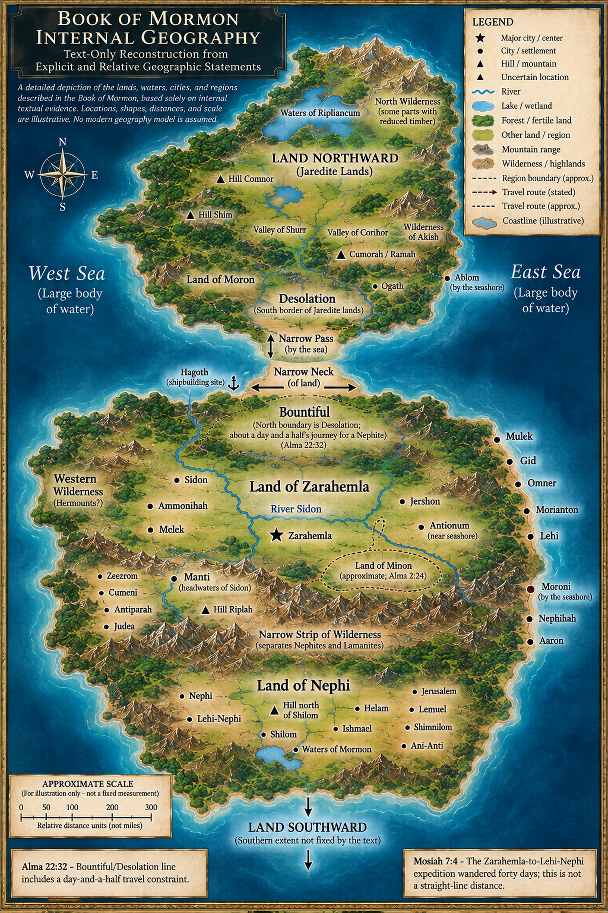

Interpretive diagram · no modern location
Nearby places share a count marker. Open it to choose an event, then use Previous and Next to follow the filtered journey. Back returns to this pin’s events. Individual pins retain their original journey numbers and geographic coordinates.
Map unavailable on this device. The full journey list remains complete, with a maps link on the selected stop.